キッチン
CICADA
排気口カバー フラット
60cm
¥3,380税込・2026年9月14日時点
レビューの要約
- うちのコンロの幅にぴったりで元からついてたみたいなの。夫も並べて見て納得してたよ
- 洗うパーツを減らしたくてフラットのほうにしたの。鍋も置けるから結果よかったよ
気になる声真ん中に鍋を置いてみたら少したわんだのが気になったの。重い鍋を置くのは少し心配かな
販売価格・容量・送料はリンク先でご確認ください
家事・掃除・洗濯 / 2026.09.15
YouTubeの動画で紹介した18品です。楽天でレビューが2,000件以上あり、平均4.6以上、低評価（星1〜2）が2%以下のものから、共働き・子育て家庭の最初の1個に選ばれている家事グッズをまとめました。
18 ITEMS 動画で紹介したもの
価格・レビュー件数は2026年9月14日に楽天のページで確認したものです。価格や在庫は変わることがあります。
低評価の割合は、各商品のレビューページに表示された星の分布から計算したものです。
耐荷重・素材などは各メーカー（ショップ）の表記です。
CICADA
60cm
¥3,380税込・2026年9月14日時点
レビューの要約
気になる声真ん中に鍋を置いてみたら少したわんだのが気になったの。重い鍋を置くのは少し心配かな
販売価格・容量・送料はリンク先でご確認ください
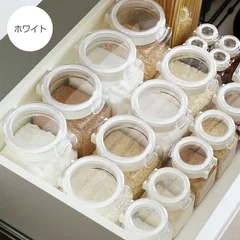
タケヤ化学工業
300ml
¥575税込・2026年9月14日時点
レビューの要約
気になる声密閉を期待して砂糖と塩を入れたら固まっちゃったの。湿気やすい物は冷蔵庫で使うかな
販売価格・容量・送料はリンク先でご確認ください
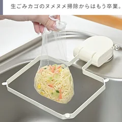
CICADA
ネット50枚付
¥1,980税込・2026年9月14日時点
レビューの要約
気になる声何度付け直してもしばらくすると外れちゃったの。シンクの表面にもよるのかな
販売価格・容量・送料はリンク先でご確認ください
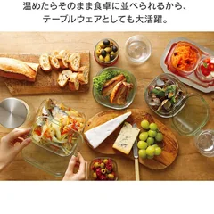
iwaki
7点セット
¥3,850税込・2026年9月14日時点
レビューの要約
気になる声密閉じゃないから傾けたら汁が漏れちゃったの。汁気の多い物は入れないかな
販売価格・容量・送料はリンク先でご確認ください

貝印 SELECT100
DH3000
¥1,430税込・2026年9月14日時点
レビューの要約
気になる声最初はよく切れたんだけど5か月ほどで刃がうまく当たらなくなっちゃったの
販売価格・容量・送料はリンク先でご確認ください
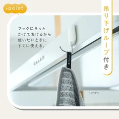
@ttata
1枚
¥300税込・2026年9月14日時点
レビューの要約
気になる声SNSで見て買ったけど何回か洗ったら薄くなって水を吸いにくくなったの
販売価格・容量・送料はリンク先でご確認ください
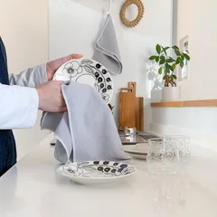
daily
2枚セット
¥1,540税込・2026年9月14日時点
レビューの要約
気になる声最初はよく吸ってたのに2か月くらいたったら急に水をはじくようになったの
販売価格・容量・送料はリンク先でご確認ください
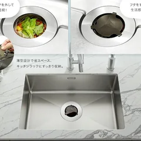
HUBATH
口径138mm以上
¥3,080税込・2026年9月14日時点
レビューの要約
気になる声うちの排水口は横に穴があってネットが吸い込まれて流れが悪くなっちゃったの
販売価格・容量・送料はリンク先でご確認ください
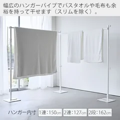
山崎実業 tower
1連タイプ
¥12,100税込・2026年9月14日時点
レビューの要約
気になる声畳んで重ねると支柱がV字に開いちゃうのが少し気になってるかな
販売価格・容量・送料はリンク先でご確認ください
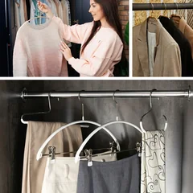
MAWA
20本
¥4,838税込・2026年9月14日時点
レビューの要約
気になる声滑らないぶん服を掛けたり取ったりするときに少し引っかかるのが気になるかな
販売価格・容量・送料はリンク先でご確認ください
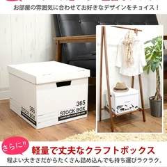
クラフト収納ボックス
6個入
¥3,850税込・2026年9月14日時点
レビューの要約
気になる声衣類ならいいんだけど雑誌を入れるには素材が少し薄く感じたかな
販売価格・容量・送料はリンク先でご確認ください
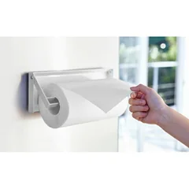
山崎実業 tower
幅30.5cm
¥2,640税込・2026年9月14日時点
レビューの要約
気になる声ペーパーが少なくなると片手では切りにくくて本体を押さえて切ってるの
販売価格・容量・送料はリンク先でご確認ください
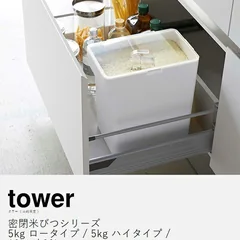
山崎実業 tower
5kg
¥2,970税込・2026年9月14日時点
レビューの要約
気になる声使って1か月ほどしたらフタが閉まらなくなったの。そこだけ残念だったかな
販売価格・容量・送料はリンク先でご確認ください
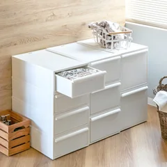
like-it
Sサイズ1個
¥3,520税込・2026年9月14日時点
レビューの要約
気になる声写真を見てセットだと思ったら1個の値段だったの。届いて1個だけでびっくりしたよ
販売価格・容量・送料はリンク先でご確認ください
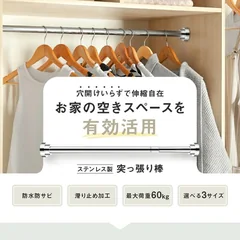
Le pumo
35cm
¥1,390税込・2026年9月14日時点
レビューの要約
気になる声押し入れで服を掛けたら何度かずり落ちてきたの。今はストッパーを足してるよ
販売価格・容量・送料はリンク先でご確認ください

お名前シール
3タイプ
¥1,280税込・2026年9月14日時点
レビューの要約
気になる声シールが台紙ごとくっついてきて1枚ずつ爪ではがすのがちょっと手間だったかな
販売価格・容量・送料はリンク先でご確認ください
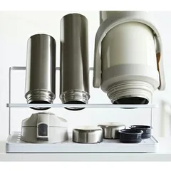
山崎実業 tower
幅32cm
¥3,850税込・2026年9月14日時点
レビューの要約
気になる声1.5リットルの大きい水筒はそっと置かないと倒れそうになるかな
販売価格・容量・送料はリンク先でご確認ください
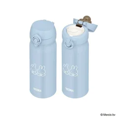
サーモス
350ml
¥3,080税込・2026年9月14日時点
レビューの要約
気になる声ロックをかけていてもフタのすき間から水がもれてきたのが気になったかな
販売価格・容量・送料はリンク先でご確認ください
SOURCE & NOTES
2026年9月14日に確認したレビューと星の分布です。